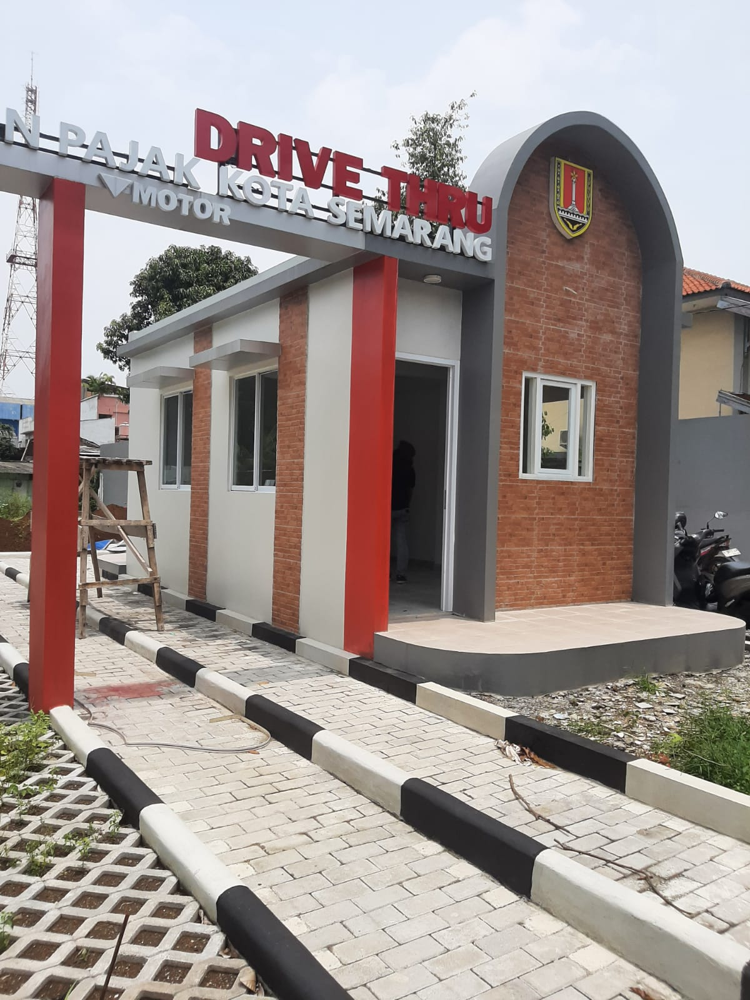

Aktivitas & Pemasangan Lokasi

Proyek Kantor BPN Ungaran
Proses ereksi tiang dan instalasi scaffolding untuk struktur utama bangunan gedung di BPN Ungaran, Kab. Semarang.

Pemasangan Kanopi Rumah
Proses penyelesaian pembangunan unit hunian minimalis beserta pemasangan tiang kanopi di Semarang Kota.

Pembangunan Villa Minimalis
Proses perakitan rangka besi dan scaffolding pada pembuatan unit villa minimalis di kawasan Glamping Kopeng, Kab. Semarang.

Proyek GOR Karang Asem
Proses perakitan rangka atap baja dan pengerjaan dinding bata pada proyek GOR Karang Asem, Sayung, Demak.

Proyek GOR Sidogemah
Pengerjaan menyeluruh GOR Sidogemah di Sayung, Demak, mulai dari plesteran dinding, tiang utama, hingga pemasangan atap.

Proyek Gatot Subroto Ngaliyan
Proses pemasangan rangka dan atap spandek untuk bangunan komersial di kawasan Gatot Subroto, Ngaliyan, Kota Semarang.

Proyek Hotel Patra Jasa
Proses penyelesaian pemasangan serta pengecatan ulang struktur rangka atap kanopi besi di Hotel Patra Jasa, Semarang.

Proyek Darupono Kaliwungu
Proses peninjauan lapangan dan pengukuran tiang beton pracetak untuk persiapan konstruksi di Darupono, Kaliwungu.

Proyek RS Roemani
Proses bongkar muat dan pemasangan panel fasad serta neon box identitas gedung di RS Roemani, Kota Semarang.